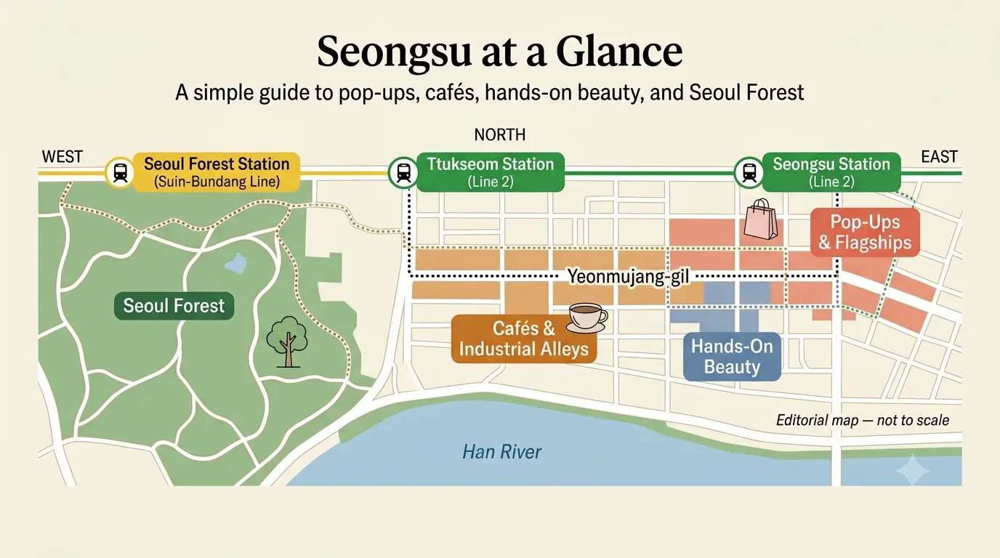

Seongsu Reiseführer 2026
Seongsu gehört zu den Seoul-Vierteln, die besonders leicht schlecht geplant werden.

Ein Café, das vor sechs Monaten gespeichert wurde, kann noch existieren. Das Pop-up daneben kann nächste Woche schon verschwunden sein. Eine Straße, die morgens ruhig aussieht, kann am Nachmittag voll werden. Und aus einem 20-Minuten-Stopp kann eine Stunde werden, wenn man sich in eine Schlange stellt, ohne vorher zu entscheiden, ob überhaupt interessiert, was am Ende dieser Schlange wartet.
Die nützliche Art, Seongsu zu besuchen, trennt das Viertel in zwei Ebenen:
Den Tag um Orte bauen, die bleiben. Pop-ups als veränderliche Ebene behandeln.
Mit den Straßen, permanenten Geschäften, Beauty-Orten, der Industriearchitektur oder Seoul Forest beginnen, wegen denen Seongsu überhaupt gewählt wurde.
Danach prüfen, was an den tatsächlichen Reisedaten stattfindet.
Diese Reihenfolge verhindert, dass ein trendgetriebenes Viertel zu einem Tag wird, an dem nur abgelaufenen Instagram-Posts hinterhergejagt wird.
Wofür Seongsu tatsächlich gut ist
Seongsu funktioniert, weil mehrere Versionen von Seoul im selben Viertel übereinanderliegen.
Die ältere Version ist weiterhin sichtbar in: Schuhwerkstätten, Fabrikgebäuden, Lagerhallen, industriellen Straßen
Die neuere Version füllt genau diese Räume mit: Mode, Beauty, Cafés, Flagship-Stores, Design, kurzfristigen Marken-Events
Diese Kombination ist wichtiger als irgendein einzelnes berühmtes Café.
Seongsu verbindet weiterhin Spuren ehemaliger Schuhfabriken und Industriegebäude mit modernen Shops, Galerien und Pop-ups. Auch Seongsu Handmade Shoes Street ist weiterhin ein aktives Produktionsgebiet und nicht nur ein historischer Name auf einer Karte.
Hierherkommen, wenn Entdecken Teil des Tages sein soll
Seongsu passt besonders zu Reisenden, die gern etwas finden, während sie laufen.
Man kann mit zwei oder drei festen Orten ankommen und trotzdem Platz lassen für etwas, dessen Existenz am selben Morgen noch gar nicht bekannt war.
Das unterscheidet Seongsu von einem Palasttag, dessen Hauptziele schon vor dem Verlassen des Hotels feststehen.
In Seongsu verändert sich die Straße selbst.
Zwischen zwei permanenten Geschäften kann plötzlich ein neuer Beauty-Launch, eine Fashion-Kollaboration oder kleine Ausstellung liegen.
Diese Flexibilität ist Teil der Attraktion.
Das Viertel ist besonders stark für Fashion und Beauty
Seongsu ist längst nicht mehr nur Seouls Lagerhallen-Café-Viertel.
OLIVE YOUNG N Seongsu arbeitet nahe Seongsu Station mit: Haut- und Kopfhautberatung, Hautfarbanalyse, wechselnden Pop-up-Inhalten, normalem Shopping Der Store liegt derzeit ungefähr 100 Meter von Seongsu Station Ausgang 4 entfernt und öffnet 10:00–22:00 Uhr.
Damit ist Seongsu nützlich, wenn nicht nur Produkte gekauft werden sollen, sondern auch interessiert, wie koreanische Beauty-Marken aktuell präsentiert werden.
Fashion funktioniert ähnlich.
Große dauerhafte Flächen, koreanische Marken, internationale Flagship-Stores und temporäre Kollaborationen konkurrieren in einem relativ kleinen Teil des Viertels um Aufmerksamkeit.
Schwächer, wenn eine feste Sightseeing-Checkliste gewünscht ist
Wer seinen Reisetag am liebsten so plant:
Attraktion A → Attraktion B → Attraktion C
kann Seongsu ineffizient finden.
Eine Schlange verändert die Zeitplanung. Ein Pop-up verlangt vielleicht Reservierung. Ein Geschäft, für das 30 Minuten eingeplant waren, verdient vor Ort vielleicht nur fünf.
Oder nichts davon interessiert noch, sobald man es sieht.
Das ist in Seongsu normal.
Die Lösung ist nicht eine kompliziertere Checkliste.
Die Lösung ist: weniger feste Verpflichtungen.
Seongsu muss keinen ganzen Tag füllen
Für viele Erstbesucher reicht ein gelungener Halbtag.
Dann bleibt genug Zeit für: industrielle Straßen, einige ausgewählte Geschäfte oder Beauty-Adressen, eine Cafépause, Abschluss bei Seoul Forest ohne Seongsu zum Ausdauertest zu machen.
Ein ganzer Tag ergibt mehr Sinn, wenn Fashion, K-Beauty, Design oder Pop-ups Hauptinteressen sind.
Wenn nicht, ist Seongsu nur ein Teil der Seoul-Reise und nicht ihr Mittelpunkt.
Mit der tatsächlich verfügbaren Zeit beginnen
Seongsu wird am einfachsten überladen, wenn unterschätzt wird, wie viel Zeit Stöbern braucht.
Die Distanzen wirken oft klein.
Die Reibung entsteht durch das Anhalten.
Ein Pop-up, ein Kosmetikgeschäft, ein Flagship-Store und ein Café können unbemerkt fast den gesamten Nachmittag verbrauchen.
Wenn ungefähr drei Stunden da sind
Eine Seite von Seongsu priorisieren.
Trendfokussierte Version:
Seongsu Station → Yeonmujang-gil → ein oder zwei Geschäfte / Pop-ups → Café oder Mahlzeit
Parkfokussierte Version:
Seoul Forest → umliegende Straßen → ein Flagship oder Café
Drei Stunden reichen nicht für: ernsthafte Pop-up-Suche, mehrere Beauty-Adressen, lange Caféschlange, entspannten Seoul-Forest-Spaziergang
Etwas bleibt draußen.
Wenn ein halber Tag da ist
Das ist die einfachste Zeitspanne für den ersten Besuch.
Es gibt genug Zeit zu verstehen, warum Seongsu anders wirkt, ohne jeden Stopp zu hetzen.
Praktischer Rhythmus:
Seongsu Station → Yeonmujang-gil → ausgewähltes Shopping / Pop-ups → richtige Pause → weiter Richtung Seoul Forest
Das entscheidende Wort ist: ausgewählt.
Nicht zehn Geschäfte speichern, nur weil sie alle fußläufig erscheinen.
Die Orte wählen, die zu den eigenen Interessen passen. Der Rest darf erst dann um Aufmerksamkeit konkurrieren, wenn man wirklich daran vorbeikommt.
Wenn fast ein ganzer Tag zur Verfügung steht
Dann kann das Viertel mehr Raum bekommen.
Möglich sind: mehr Fashion oder Beauty
ein wirklich relevantes Café, etwas Industrie-Kontext
Seoul Forest als echte Pause statt letztem Fotostopp Auch Pop-ups bekommen mehr Raum.
Wenn ein temporäres Event Schlange oder festen Zeitslot hat, bricht nicht gleich die gesamte Route zusammen.
Trotzdem gibt es auch mit einem vollen Tag keinen Grund, jeden Trend-Ort zu besuchen.
Mehr Zeit soll mehr Flexibilität erzeugen – nicht eine größere Checkliste.
Wochenenden verändern die Rechnung
Ein Ort, der an einem ruhigen Wochentag 20 Minuten braucht, kann mit Schlange viel länger dauern.
Das betrifft besonders:
temporäre Pop-ups
neue Flagship-Stores, virale Cafés
Wenn ein Ort wirklich wichtig ist, früher hin.
Optionale Stopps nach hinten.
Die schlechteste Nutzung von Seongsu-Zeit ist eine Stunde für etwas anzustehen, das erst dadurch interessant wurde, dass andere Menschen bereits davorstanden.
Ein gebuchtes Erlebnis reicht meistens
Seongsu besteht nicht nur aus Geschäften und Pop-ups. Einige sinnvollere Aktivitäten lassen etwas herstellen, testen oder verstehen, statt nur noch eine weitere Einkaufstasche mitzunehmen. Der Preis dafür ist Zeit. Sobald eine feste Session gebucht ist, wird sie zum Anker des Tages. Deshalb als Ersatz für ein Flagship- oder Pop-up-Zeitfenster behandeln – nicht zusätzlich auf eine ohnehin volle Route setzen. Skincare-Kurs, Personal Color oder Parfümworkshop können jeweils sinnvoll sein.
Alle drei meistens nicht.
Das eine auswählen, das am besten zu dem passt, weshalb Seongsu ohnehin gewählt wurde. Dann den restlichen Tag flexibel lassen.

Wo beginnen: Seongsu Station oder Seoul Forest?
Es gibt keinen einzigen richtigen Eingang nach Seongsu.
Der sinnvolle Start hängt davon ab, welche Version des Viertels zuerst gewünscht ist.
Seongsu Station, wenn Trends Priorität haben
Für Erstbesucher mit Fokus auf Shopping, Pop-ups, Beauty und Industrie-Straßen ist Seongsu Station die einfachere Ausgangswahl.
Yeonmujang-gil liegt aktuell ungefähr 533 Meter von Ausgang 3 entfernt. OLIVE YOUNG N Seongsu liegt ungefähr 100 Meter von Ausgang 4 entfernt.
Damit landet man nahe dem Teil des Viertels, in dem temporärer und permanenter Einzelhandel besonders stark überlappen.
Von hier kann sich der Tag langsam nach Westen und Süden bewegen, statt am Park zu beginnen und später mehrfach zu Geschäften zurückzulaufen.
Seoul Forest, wenn der Park Priorität hat
Wenn Seoul Forest selbst einer der Hauptgründe für den Besuch ist, die Logik umdrehen.
Auf der Parkseite starten, solange Energie und Wetter dafür passen.
Danach Richtung dichterer Geschäftsstraßen laufen.
Diese Version funktioniert besonders gut, wenn der Tag immer lebendiger statt immer ruhiger werden soll.
Der Park bildet die offene erste Hälfte.
Shopping und Cafés folgen danach.
Nicht quer durchs Viertel laufen, nur wegen des Stationsnamens
Nicht jeder Seongsu-Besuch muss an Seongsu Station beginnen, nur weil das Viertel Seongsu heißt.
Das wäre genauso wenig sinnvoll wie anzunehmen, jeder Myeongdong-Besuch müsse an Myeongdong Station beginnen.
Auf den tatsächlichen Plan schauen.
Wenn der erste relevante Stopp nahe Seoul Forest liegt: dort starten.
Wenn fast alle gespeicherten Orte um Yeonmujang-gil und Seongsu Station liegen: auf dieser Seite starten.
Die U-Bahn ist der Eingang.
Sie ist nicht der Reiseplan.
Einbahn-Routen funktionieren besser als ständiges Zurücklaufen
Ein einfacher Erstbesucher-Ablauf:
Seongsu Station → Yeonmujang-gil → ausgewählte Flagship-Stores / Pop-ups → Café oder Mahlzeit → Seoul Forest
Die umgekehrte Version funktioniert, wenn der Park wichtiger ist.
Beides ist besser als:
Station → Geschäft → Park → zurück zum Geschäft → anderes Café → wieder Richtung Park
nur weil die Karte kompakt aussah.
Seongsu ist gut zu Fuß machbar.
Das bedeutet nicht, dass wiederholtes Laufen kostenlos ist.
Yeonmujang-gil verstehen, bevor einfach losgelaufen wird
Yeonmujang-gil gehört zu den besten Orten, um zu verstehen, warum modernes Seongsu so aussieht.
Die Straße ist nicht einfach eine Reihe trendiger Läden.
Spuren ehemaliger Schuhfabriken und Industriegebäude stehen heute neben: Cafés, Galerien, Modegeschäften, Brand-Pop-ups Aktive Pop-up-Daten vor dem Besuch prüfen, weil sich die temporäre Ebene verändert.
Das ist fast eine Zusammenfassung von Seongsu.

Die Straße als Rückgrat nutzen – nicht als Checkliste
Nicht alles entlang Yeonmujang-gil muss betreten werden.
Die Straße verbindet die Orte, die tatsächlich wichtig sind.
Wenn ein neues Geschäft Aufmerksamkeit weckt: hineingehen.
Wenn eine Schlange für eine Marke steht, die man nicht kennt und die nicht interessiert: weitergehen.
Die Menschenmenge ist Information.
Sie ist keine Anweisung.
Auf die Gebäude ebenso achten wie auf die Marken
Ein Teil von Seongsus Reiz kommt aus den Räumen selbst.
Hohe Decken, sichtbarer Backstein, alte Fabrikproportionen und Lagerhallen-Grundrisse sind keine Touristenkulissen.
Sie stammen aus der Industriegeschichte des Viertels.
Diese Geschichte ist noch sichtbar, etwa im Handmade-Shoes-Bezirk. Neuere Einzelhandelsflächen bewahren häufig bewusst Teile älterer Strukturen.
Musinsa Store Seongsu @ Daelim Changgo übernimmt zum Beispiel die Struktur der lange bestehenden Daelim Warehouse statt sie hinter einem gewöhnlichen Shopping-Interieur zu verstecken.
Darum fühlt sich ein Modegeschäft in Seongsu anders an als dieselbe Marke im Kaufhaus.
Das Gebäude ist Teil des Erlebnisses.
Permanente Orte nicht mit temporärem Inhalt verwechseln
Diese Unterscheidung verhindert viele Planungsfehler.
Yeonmujang-gil bleibt.
Daelim Warehouse gehört dauerhaft zum Viertel.
Die Schuhproduktionsgeschichte verschwindet nicht nächste Woche.
Eine Markeninstallation innerhalb eines Gebäudes kann dagegen bereits vor der Landung schließen.
Den Reiseplan um die erste Gruppe bauen.
Die zweite Gruppe individualisiert den Tag.
Den Plan ändern dürfen
Seongsu ist ein Viertel, in dem eine Planänderung oft die richtige Entscheidung ist.
Vielleicht ist ein Pop-up wichtiger als das gespeicherte Geschäft.
Vielleicht ist die Café-Schlange länger, als das Café wert ist.
Vielleicht wird Seoul Forest später erreicht als geplant und 40 Minuten reichen plötzlich.
Das bedeutet nicht, dass die Route gescheitert ist.
Es bedeutet, dass Seongsu so benutzt wurde, wie das Viertel tatsächlich funktioniert.
Pop-ups: Daten prüfen, nicht alte Listen
Pop-ups sind ein Grund, warum Seongsu aktuell wirkt.
Sie sind zugleich der einfachste Teil einer Seongsu-Route, den man falsch plant.
Ein Geschäft aus einem Video vom letzten Monat kann bereits verschwunden sein. Eine Collaboration kann zwei Tage vor der Ankunft enden. Ein Event kann noch laufen, aber Reservierung, Warteliste oder Zeitslot verlangen.
Die nützliche Frage lautet nicht:
„Was sind die besten Pop-ups in Seongsu?“
Sondern:
„Was ist an meinen Daten tatsächlich geöffnet – und interessiert es mich genug, dafür Zeit zu verwenden?“
Reisedaten prüfen, bevor die Route gebaut wird
Die Evergreen-Version des Tages um permanente Orte bauen.
Dann aktuelle Pop-ups kurz vor der Reise prüfen.
Für jedes Event bestätigen:
- Start- und Enddatum
- tägliche Öffnungszeiten
- Reservierungs- oder Wartelogik
- kostenloser oder kostenpflichtiger Eintritt
- hauptsächlich Shopping, Ausstellung oder interaktives Erlebnis?
Ein schöner gespeicherter Post beantwortet keine dieser Fragen.
Manche Pop-ups sind Aktivitäten – nicht nur temporäre Shops
Einige Seongsu-Pop-ups verdienen auch dann Zeit, wenn Shopping nicht Hauptgrund ist. Je nach Event kann es geben: Produkttests, Spiele, Fotozonen, Samples, DIY-Elemente, limitierte Waren
Dann wird das Pop-up selbst zur Aktivität. Das verändert die Route. Zehn Minuten Stöbern und ein zeitgebundenes Erlebnis mit mehreren Zonen verdienen nicht denselben Zeitblock. Wenn Reservierung oder mehrere Aktivitätsbereiche nötig sind, echten Zeitblock geben und dafür einen anderen Shoppingstopp streichen.
Wenn das Erlebnis nur Fotowand + Merchandise einer uninteressanten Marke ist: weitergehen. Interaktiv bedeutet nicht automatisch lohnend.
Interesse kommt vor der Schlange
Eine lange Schlange kann ein Event wichtiger erscheinen lassen, als es ist.
Das ist kein guter Grund einzusteigen.
Wenn Marke, Künstler, Figur oder Produkt bereits vorher wichtig waren, kann das Warten sinnvoll sein.
Wenn Interesse erst entstand, weil 80 Personen draußen stehen:
weitergehen. Die Schlange zeigt Popularität.
Sie zeigt nicht, ob eine Stunde des eigenen Seoul-Tages gut investiert ist.
Ein gutes Pop-up kann reichen
In Seongsu können viele temporäre Events gleichzeitig laufen.
Alle sammeln zu wollen macht das Viertel zum Reservierungsfahrplan.
Für die meisten Reisenden ist sinnvoller:
ein wirklich interessantes Pop-up + dauerhafte Geschäfte + Café oder Mahlzeit + Seoul Forest
als fünf Pop-ups nur deshalb, weil sie gerade verfügbar waren.
Temporäre Events ersetzen einen Teil der normalen Route.
Sie kommen nicht zusätzlich oben drauf.
Eine Alternative bereithalten
Temporäre Events schaffen ein weiteres Problem: Pläne ändern sich.
Ein Pop-up kann: früher schließen, limitierte Produkte ausverkaufen, so voll werden, dass die Wartezeit den Besuch nicht mehr rechtfertigt
Vorher wissen, was dann gemacht wird.
In Seongsu ist das leicht:
zum nächsten dauerhaften Geschäft, Mittagessen, Richtung Seoul Forest, weiter entlang Yeonmujang-gil
Ein gescheitertes Pop-up soll 10 Minuten kosten.
Nicht den Nachmittag.
Shopping in Seongsu: dauerhafte Flagship-Stores, die sich planen lassen
Seongsu-Shopping funktioniert besser, wenn Orte mit dauerhaftem Besuchsgrund von dem getrennt werden, was gerade diese Woche trendet.
Das Ziel ist nicht eine längere Einkaufsliste.
Es geht darum, dem Tag einige verlässliche Anker zu geben.
HAUS NOWHERE macht Einzelhandel zum Erlebnis
HAUS NOWHERE SEOUL ist nicht nur für Reisende interessant, die Brillen kaufen wollen.
Gentle Monsters aktueller Flagship-Store an 433 Ttukseom-ro ist täglich von 11:00 bis 21:00 Uhr geöffnet.
Der größere Punkt ist, wie der Raum Einzelhandel, Design und Installation zu einem Erlebnis verbindet.
Dorthin gehen, wenn solche räumlichen Konzepte interessieren.
Wenn nicht, ist ein fotogenes Gebäude allein kein Grund, es zur Pflicht zu machen.
Das ist eine wichtige Seongsu-Unterscheidung.
Ein visuell beeindruckender Flagship-Store kann für die eigene Reise trotzdem irrelevant sein.
Musinsa zeigt eine andere Version von Seongsu
Musinsa Store Seongsu @ Daelim Changgo nutzt die Struktur der lange bestehenden Daelim Warehouse statt sie hinter einem normalen Einzelhandelsinterieur zu verstecken.
Erhaltene Lagerhallenstruktur, hohe Decken und große Verkaufsflächen sind Teil des Geschäfts.
Dadurch löst er für zwei Reisetypen gleichzeitig etwas:
Interesse an koreanischer Mode
Interesse daran, wie Seongsu alte Industriegebäude in neue kommerzielle Räume umnutzt
Wenn keines davon interessiert, ist es nur ein weiteres Geschäft.
Wenn beides interessiert, löst ein Stopp zwei Interessen.

Auch die permanente Ebene verändert sich
Seongsu fügt weiterhin große permanente Einzelhandelsflächen hinzu.
Musinsa Mega Store Seongsu eröffnete zum Beispiel als deutlich größere Mode- und Beauty-Fläche, der Shopping mit räumlichem Erlebnis verbindet.
Genau deshalb altern alte Artikel wie „fünf Geschäfte, die man in Seongsu unbedingt besuchen muss“ schlecht.
Die permanente Ebene verändert sich langsamer als Pop-ups.
Still steht sie trotzdem nicht.
Flagship-Stores nach Interesse wählen
Nützlicher Filter:
Fashion
Ein großes Modegeschäft wählen.
Design / räumliches Erlebnis
Das Flagship auswählen, dessen Architektur oder Installation wirklich interessiert.
Beauty
Die eigene K-Beauty-Sektion nutzen statt jedes Kosmetikgeschäft in die Shoppingliste zu packen.
Fan einer bestimmten Marke
Direkt zu dieser Marke.
Ein oder zwei Flagship-Stores mit unterschiedlichen Gründen reichen für die meisten Reisenden.
Seongsu funktioniert besser, wenn jeder große Raum eine andere Aufgabe in der Route hat.
Parfümherstellung passt zu einer langsameren kreativen Stunde
Seongsus Duft- und Designkultur macht Parfümworkshops zu einer natürlichen Ergänzung.
Aktuelle Workshops lassen Reisende in ungefähr einer Stunde bis anderthalb Stunden einen eigenen Duft zusammenstellen. Einige unterstützen mehrere Sprachen über geführte Tutorials.
Das ist eine sinnvollere Wahl, wenn etwas Persönliches hergestellt und mit nach Hause genommen werden soll, statt noch einen weiteren Flagship-Store in den Tag zu setzen.
K-Beauty in Seongsu: Olive Young N oder AMORE?
K-Beauty ist inzwischen einer der klarsten Gründe, weshalb internationale Reisende nach Seongsu suchen.
Die nützliche Frage lautet nicht, welcher Store „besser“ ist.
OLIVE YOUNG N Seongsu und AMORE Seongsu lösen unterschiedliche Probleme.
Genau dieser Unterschied sollte entscheiden, wohin die Zeit geht.
OLIVE YOUNG N für breite Entdeckung
OLIVE YOUNG N Seongsu liegt ungefähr 100 Meter von Seongsu Station Ausgang 4 entfernt und ist aktuell von 10:00 bis 22:00 Uhr geöffnet.
Der Store geht über normale Produktregale hinaus. Aktuelle Services umfassen: Haut- und Kopfhautberatung, Hautfarbanalyse, Tax-Refund-Unterstützung, monatlich wechselnde Inhalte und Pop-ups
Damit ist er ein starker erster Stopp, wenn man:
- mehrere koreanische Marken entdecken
- Produktkategorien vergleichen
- aktuelle Beauty-Trends sehen
- Shopping mit Diagnose oder Markenerlebnissen verbinden möchte.
Weniger nötig ist der Stopp, wenn das exakte Produkt bereits bekannt ist und anderswo gekauft werden kann, ohne einen Teil des Seongsu-Tages in einem weiteren großen Store zu verbringen.
Manche Services brauchen Planung
OLIVE YOUNG N nutzt derzeit je nach Service sowohl Vor-Ort- als auch Vorabreservierung.
Wenn Hautanalyse oder eine bestimmte Beratung ein Hauptgrund des Besuchs ist: aktuellen Reservierungsprozess vor der Ankunft prüfen.
Nicht annehmen, dass man zu jeder Uhrzeit einfach hineingehen und sofort bedient werden kann.
Shopping kann flexibel bleiben.
Eine konkrete Beratung möglicherweise nicht.
Personal Color ist nützlich, wenn es das anschließende Shopping verändert
Eine Personal-Color-Session kann den Aufwand wert sein, wenn später noch Beauty- oder Fashion-Shopping geplant ist.
Rund um Seongsu gibt es englischfreundliche Optionen, die sich mit dem restlichen Viertel kombinieren lassen. Der Wert ist am größten, wenn das Ergebnis beeinflusst, nach welchen Farbtönen, Kleidungsstücken oder Makeup-Produkten danach gesucht wird.
Wer die eigene Palette bereits kennt oder ohnehin nicht danach einkaufen will, kann die Session leichter auslassen.
AMORE Seongsu ist langsamer und fokussierter
AMORE Seongsu bietet ein anderes Beauty-Erlebnis.
Der Space umfasst: Beauty Library mit mehr als 1.000 Amorepacific-Produkten, Cleansing Room
Garden Lounge Aktuell geöffnet: Dienstag bis Sonntag, 10:30–20:30 Uhr Montags geschlossen.
Das passt stärker, wenn ein langsameres Testen und Erkunden innerhalb eines Beauty-Ökosystems gewünscht ist statt ein schneller Überblick über einen großen Multi-Brand-Markt.
Die Unterscheidung:
OLIVE YOUNG N → Breite, Marken, Trends, Entdeckung
AMORE Seongsu → langsameres Testen, ein Beauty-Ökosystem, Erlebnis
Beides ist nicht automatisch nötig.
Wenn Beauty nur ein Teil des Tages ist, eines wählen
Wenn K-Beauty Hauptinteresse ist, kann beides sinnvoll sein.
Wenn Beauty nur eines von sechs Seongsu-Interessen ist:
auswählen. OLIVE YOUNG N bei Vielfalt.
AMORE bei langsamerem Produkterlebnis.
Danach genug Zeit für Fashion, Industrie-Straßen, Essen oder Seoul Forest behalten.
Ziel ist nicht zu beweisen, dass jede bekannte Beauty-Adresse besucht wurde.
Skincare-Herstellung passt besser zu Seongsu als noch ein Kosmetikstopp
Ein praktischer Skincare-Kurs ergibt Sinn, wenn K-Beauty einer der Gründe für Seongsu ist und mehr gewünscht wird als Produktvergleich in Regalen.
Aktuelle Angebote umfassen Erlebnisse, bei denen Haut geprüft, eine passende Cleanser-Linie gewählt und ein eigenes Hautpflegeprodukt hergestellt oder verpackt wird.
Dadurch wird ein Teil des Beauty-Stopps zur Aktivität statt zu einer weiteren Shoppingrunde.
Seongsu-Cafés: eines wählen, nicht fünf
In Seongsu gibt es genug berühmte Cafés, um Kaffee zum ganzen Reiseplan zu machen.
Wenn genau das der Grund des Besuchs ist: völlig in Ordnung.
Für alle anderen ist eine gute Cafépause meist nützlicher als eine Café-Checkliste.
Die Reiseentscheidung lautet: Welche Rolle spielt das Café heute?
Ein Café aus einem Grund wählen
Mehrere Gründe sind legitim.
Das Gebäude interessiert.
Ein Ort wie Daelim Warehouse ist relevant, weil der umgenutzte Industriebau modernes Seongsu erklärt.
Das Essen interessiert.
Wenn eine bestimmte Bäckerei oder ein Dessert wirklich wichtig ist, darf genau das der Grund sein.
Es wird eine Pause gebraucht.
Oft der beste Grund.
Nach zwei oder drei Geschäften und einem Pop-up kann eine Stunde Sitzen den restlichen Tag spürbarer verbessern als noch ein Trendziel.
Nur warten, wenn das Café selbst wichtig ist
Warten, wenn genau dieses Café einer der Gründe war, nach Seongsu zu kommen.
Wenn nur Kaffee und Sitzplatz gebraucht werden:
einen Block weitergehen. Seongsu hat keinen Kaffeemangel.
Café-Hopping hat versteckte Kosten
Fünf Cafés bedeuten nicht nur fünf Getränke.
Sie bedeuten:
jeden Ort finden, warten, bestellen, sitzen, weiterlaufen, immer wieder entscheiden, ob der nächste noch lohnt
Das kann Stunden verbrauchen, die im Reiseplan leer aussahen.
Wenn Cafés Hauptinteresse sind: den Tag darum bauen.
Wenn nicht:
ein bewusst gewähltes Café → Viertel weiter erkunden
ist die bessere Ausgangslösung.
Pause vor Seoul Forest oder nach dem dichtesten Shopping-Block nutzen
Die Zeitplanung ist wichtiger als das Café-Ranking.
Nützlicher Rhythmus:
Seongsu Station → Yeonmujang-gil → Shopping / Pop-up → Café → weiter Richtung Seoul Forest
oder:
Seoul Forest → Spaziergang → Café → dichteres Seongsu
Das Café wird zum Übergang zwischen zwei verschiedenen Teilen des Viertels.
Das ist nützlicher, als quer durch Seongsu zu laufen, weil ein Latte auf TikTok auftauchte.
Warum alte Fabriken und Schuhwerkstätten weiterhin zählen
Modernes Seongsu wird verständlicher, wenn bekannt ist, was vor den Pop-ups hier war.
Das Viertel begann nicht als Fashion-Bezirk.
Jahrzehntelang war Seongsu mit: Produktion, Werkstätten, besonders Schuhherstellung verbunden.
Diese Geschichte erklärt das heutige Viertel besser als eine Liste trendiger Cafés.
Industriegebäude sind nicht nur Dekoration
Große Grundflächen, hohe Decken, Backsteinwände und alte Lagerhallenstrukturen boten Räume, die später für Cafés, Geschäfte, Ausstellungen und Markeninstallationen wiederverwendet werden konnten.
Darum fühlen sich viele neue Orte in Seongsu anders an als normaler Einzelhandel im Einkaufszentrum.
Das Gebäude bleibt sichtbar.
Ein Modegeschäft kann weiterhin wie eine Lagerhalle wirken.
Ein Café kann weiterhin die Proportionen der vorherigen Fabrik zeigen.
Die industrielle Vergangenheit ist Teil der heutigen Designsprache.

Die Schuhindustrie ist noch vorhanden
Handmade Shoes Street nicht wie ein Museumsviertel behandeln, das vor Jahren aufgehört hat zu funktionieren.
Design, Entwicklung, Produktion und Verkauf laufen im Bezirk weiterhin.
Damit ist die Gegend auch dann nützlich, wenn keine Maßschuhe bestellt werden.
Sie erklärt, warum Schuhe in Seongsus Einzelhandelsidentität noch immer so präsent sind.
Diese Verbindung ist selbst in neuen Geschäften sichtbar.
Altes und neues Seongsu sind keine vollständig getrennten Geschichten.
Das eine leiht sich ständig vom anderen.
Dafür braucht es keine Geschichtsführung
Hier wird nicht verlangt, zwei Stunden Industriegeschichte zu studieren.
Der praktische Wert ist einfacher:
Wenn Yeonmujang-gil entlanggelaufen oder eine umgenutzte Lagerhalle betreten wird: auch das Gebäude ansehen – nicht nur die Marke darin.
Dieser kleine Kontext verändert das Viertel von:
„Ort mit vielen modischen Geschäften“
zu:
„ehemaliges Produktionsviertel, das in Echtzeit neu genutzt wird.“
Das ist ein interessanterer Grund, hier zu sein.
Die alte Ebene verhindert, dass der Tag nur aus Trends besteht
Pop-ups verschwinden.
Marken wechseln.
Ein virales Café kann schnell Aufmerksamkeit verlieren.
Seongsus Industriestruktur verändert sich viel langsamer.
Darum gehört sie in den Evergreen-Teil des Guides.
Sie liefert etwas, das verstanden werden kann, selbst wenn keines der temporären Events dieser Woche interessiert.
Seoul Forest als Reset nutzen
Seoul Forest ist nicht einfach eine weitere Sehenswürdigkeit nach dem Shopping.
Der Park funktioniert am besten als der Teil des Tages, an dem Seongsu das Tempo komplett verändert.
Nach mehreren Stunden in engen Straßen, Geschäften und Schlangen zählt genau diese Größe.
Den Park nutzen, wenn der Wechsel wirklich gebraucht wird
Nützliches Muster:
Yeonmujang-gil → Shopping / Pop-up → Café oder Mahlzeit → Seoul Forest
Wenn der Park erreicht wird, liegt der Wert nicht in einem weiteren Pin auf der Karte.
Sondern in Raum.
Laufen, ohne ein weiteres Geschäft zu betreten.
Sitzen, ohne noch ein Getränk bestellen zu müssen.
Danach entscheiden, ob Seongsu noch mehr braucht.
Darum funktioniert Seoul Forest besonders gut nach dem dichtesten kommerziellen Teil des Nachmittags.

Nicht den ganzen Park ablaufen müssen
Seoul Forest ist zu groß für einen schnellen Haken auf einer Liste.
Bei nur 30–40 Minuten einen Teil auswählen und den Umgebungswechsel genießen.
Bei gutem Wetter und hoher Priorität länger bleiben.
Ein Halbtag in Seongsu wird nicht besser, nur weil jeder mögliche Parkweg abgelaufen wurde.
So viel Park nutzen, wie der Tag braucht.
Wetter soll diesen Teil der Route steuern
Seoul Forest wird bei angenehmem Wetter deutlich wertvoller.
An einem klaren Frühlings- oder Herbstnachmittag kann eine lange Pause sinnvoll sein.
Bei starkem Regen, drückender Hitze oder unangenehmer Kälte bringt ein erzwungener langer Parkspaziergang wenig.
Dann: Park kürzen oder streichen und Zeit zurückgeben an: Essen, Shopping, anderen Stopp drinnen
Ein Park ist nützlich, weil er angenehm ist.
Nicht weil er im ursprünglichen Reiseplan stand.
2026 gibt es einen zusätzlichen Grund, den Park zu prüfen
Die Seoul International Garden Show 2026 ist laut aktuellem Plan bis 27. Oktober 2026 angesetzt. Seoul Forest gehört zum Hauptveranstaltungsbereich.
Das gehört in die Ebene für aktuelle Inhalte, nicht in die Evergreen-Route.
Wenn die Reisedaten passen, kann es Grund sein, dem Park mehr Zeit zu geben.
Nach dem Ende der Veranstaltung behält Seoul Forest trotzdem seine Rolle.
Das temporäre Event verändert den Besuch.
Es erschafft nicht den Wert des Parks.
Was rund um Seongsu essen? Eine Mahlzeit, nicht nur noch ein Dessert
Ein Seongsu-Tag kann versehentlich werden zu:
Kaffee → Gebäck → Pop-up → noch ein Kaffee → Dessert
Wenn Cafés der ganze Zweck sind: kein Problem.
Wenn irgendwann eine richtige koreanische Mahlzeit gewünscht ist, sollte das geklärt sein, bevor alle gleichzeitig hungrig werden.
Seongsu hat ältere Essenskultur, die leicht verschwindet, wenn jede Empfehlung mit einer Bäckerei beginnt.
Gamjatang für eine unkomplizierte Mahlzeit
Somunnan Seongsu Gamjatang ist ein nützliches Beispiel, weil es ein praktisches Essensproblem löst und nicht einfach einen weiteren Trendstopp hinzufügt.
Das Restaurant ist 24 Stunden geöffnet und hat außerdem ausgewiesene Sitzplätze für Alleinreisende.
Nützlich für:
- Solo-Reisende, die richtig essen möchten
- spätes Mittagessen nach Shopping
- Abendessen, wenn der restliche Tag flexibel geworden ist
- alle, die genug von Café-Essen haben
Berühmtheit macht es nicht zur Pflicht.
Wenn die Schlange länger ist als das Essen persönlich wert wäre, gibt es weitere Restaurants in Seongsu.
Galbi Alley gehört zu einem anderen Seongsu
Seongsu-dong Galbi Alley entwickelte sich in den 1970er-Jahren rund um den Verkehr zur Rennbahn. Dort gibt es weiterhin Schweinerippchen-Restaurants.
Das ist nützlich, weil es die kulinarische Geschichte mit dem älteren Viertel verbindet statt mit der heutigen Pop-up-Ökonomie.
Wählen, wenn gegrilltes Fleisch und eine sitzende Mahlzeit zur Gruppe passen.
Weniger sinnvoll bei: Solo-Reise, wenig Zeit, bereits geplanter schwerer Mahlzeit später
Wenn nötig, soll das Mittagessen den Nachmittag steuern
Essen muss nicht in eine winzige Lücke zwischen Geschäften gequetscht werden.
Wer hungrig ankommt: zuerst essen.
Eine angenehme Mahlzeit kann die nächsten drei Stunden zu Fuß wertvoller machen als das Festhalten an einer beliebigen Shopping-Reihenfolge.
Bei zeitgebundenem Pop-up oder Beratung: vorher oder danach essen.
Der fixe Programmpunkt kontrolliert den flexiblen.
Café-Essen und echte Mahlzeit lösen verschiedene Probleme
Gebäck reicht, wenn nur eine Pause gebraucht wird.
Ein Dessertcafé darf selbst Ziel sein, wenn genau das eines der Interessen ist.
Suppe, Grillfleisch oder eine andere richtige Mahlzeit löst Hunger.
Nicht beide dieselbe Aufgabe erfüllen lassen.
Mögliche Erstbesucher-Rhythmen:
leichtes Frühstück / Mittagessen anderswo → Seongsu-Shopping → Cafépause → richtige Mahlzeit später
oder:
Mittagessen in Seongsu → Shopping / Pop-ups → Seoul Forest → Café vor der Abreise
Nicht die eine exakte Reihenfolge ist wichtig.
Es soll nur vermieden werden, um 19 Uhr festzustellen, dass alle vier Desserts gegessen haben und trotzdem noch Abendessen brauchen.
Routen, die tatsächlich funktionieren
Seongsu braucht nicht die eine perfekte Route.
Es braucht genug Struktur, damit nicht ständig zurückgelaufen wird – und genug Flexibilität, damit ein temporäres Event den Tag trotzdem verändern kann.
Für die meisten Reisenden reichen mehrere klare Varianten.
Route 1 — ungefähr drei Stunden: fokussierter Seongsu-Besuch
Nutzen, wenn Seongsu nur ein Teil eines größeren Seoul-Tages ist.
Seongsu Station → Yeonmujang-gil → eine Shopping-Priorität → ein Café oder eine Mahlzeit
Diese Shopping-Priorität kann sein:
- ein Fashion-Flagship
- OLIVE YOUNG N
- AMORE Seongsu
- ein aktuelles Pop-up
Eines wählen.
Drei Stunden verschwinden schnell, sobald Stöbern und Warten beginnen.
Das ist nicht die Route für fünf Geschäfte, zwei Cafés und Seoul Forest.
Route 2 — Halbtag: Standard für Erstbesucher
Für viele erste Besuche ist das die sinnvollste Version.
Vorgeschlagene Zeit — ungefähr 6 Stunden
-
11:00 — Seongsu Station, Ausgang 3
Beginnen, wenn die kommerzielle Seite von Seongsu richtig in den Tag kommt.
Den ersten Teil für Yeonmujang-gil und das dichtere Shoppinggebiet nutzen statt sofort quer durchs Viertel zu laufen.
-
11:10–12:30 — Yeonmujang-gil + ein oder zwei
Stopps, die
wirklich zählen Zuerst Yeonmujang-gil entlanglaufen. Ein oder zwei
Orte wählen, die zu bereits bestehenden
Interessen passen: Fashion
-
Beauty, Design, aktuelles Pop-up Nicht
nur deshalb in eine Schlange gehen, weil andere warten. Eine Schlange
ist Information. Sie ist keine Anweisung. 12:30–13:30 — Richtig zu Mittag essen
-
Stoppen, bevor der Tag nur noch aus Kaffee, Gebäck und Einkaufstaschen besteht.
Eine echte Mahlzeit nahe der Route wählen und die Stunde als richtige Pause nutzen.
13:30–14:30 — Eine Shopping-Priorität auswählen
Diese Stunde einem Hauptinteresse geben.
-
Beauty, Fashion, Design-Flagship
oder eine bestimmte Marke können jeweils den ganzen Block füllen. Nicht versuchen, jedes große
Seongsu-Geschäft abzuklappern. 14:30–15:20 — Ein Café
Ein Café wählen, weil: das Gebäude gefällt
-
das Essen interessiert, oder wirklich eine
Sitzpause gebraucht wird Wenn Cafés selbst Hauptgrund
sind: länger bleiben. Sonst reicht eine richtige Pause. 15:20–15:50 — Richtung Seoul Forest Die Route weiter in eine Richtung laufen lassen.
-
Nicht zurück zur Seongsu Station wegen eines gespeicherten Geschäfts, außer er ist wirklich wichtiger als der restliche Nachmittag.
15:50–17:15 — Bei Seoul Forest enden
Nach mehreren Stunden in Geschäften, Straßen und Schlangen das Tempo verändern.
Nicht den ganzen Park ablaufen.
-
Laufen, sitzen und etwas Freiraum bekommen, bevor entschieden
wird, ob Seongsu fertig ist. Nach 17:15 — Für Abendessen bleiben
oder weiterziehen Wenn noch mehr Seongsu gewünscht ist: bleiben. Wenn ein anderes Viertel den Abend übernimmt:
von der Seoul-Forest-Seite abreisen. Nicht nur deshalb noch ein Flagship ergänzen, weil die Route früher fertig wurde.
Seongsu Station → Yeonmujang-gil → ausgewähltes Shopping / Pop-up → Café oder richtige Mahlzeit → weiter Richtung Seoul Forest
Die Route beginnt kommerziell dichter und endet mit mehr offenem Raum.
Genau das schafft einen natürlichen Rhythmuswechsel.
Wenn ein Pop-up besonders wichtig ist, soll es einen Shoppingstopp ersetzen.
Wenn kein temporäres Event interessiert, funktioniert die Route trotzdem.
Das ist der Punkt.
Route 3 — Park zuerst
Nutzen, wenn das Wetter gut ist und Seoul Forest wichtiger ist als die neueste Geschäftseröffnung.
Vorgeschlagene Zeit — ungefähr 6 Stunden
-
09:30 — Seoul Forest Station
Seoul Forest nutzen, während die kommerzielle Seite von Seongsu erst hochfährt.
Diese Route funktioniert am besten, wenn der Park selbst einer der Besuchsgründe ist – nicht nur ein Stopp, der nach Shopping hineingequetscht werden soll.
-
09:40–11:00 — Seoul Forest
Ungefähr 80 Minuten. Nicht den
ganzen Park ablaufen. Genug laufen, um
offenen Raum zu genießen. Bei Bedarf sitzen. Den ruhigeren Morgen nutzen, bevor die Shoppingstraßen voller werden.
-
11:00–11:30 — Langsam nach Seongsu wechseln
Zu Fuß Richtung kommerzieller Seite, während Geschäfte und Flagship-Stores öffnen.
Die Veränderung der Straßen wahrnehmen statt diesen Abschnitt als tote Transferzeit zu behandeln.
-
11:30–12:30 — Mittagessen oder ein richtiges Café
Nach Hunger wählen. Wenn eine
Mahlzeit gebraucht wird: essen.
Wenn das Frühstück spät war und nur Pause nötig ist: Café. Nicht automatisch beides planen.
12:30–13:30 — Einen permanenten Anker wählen
-
Einen Ort auswählen, der auch dann einen Grund zum
Besuch hat, wenn die Trends dieser Woche verschwunden sind. Zum Beispiel: ein Fashion-Flagship,
designorientierter Ort, K-Beauty-Ziel, konkrete Marke, die sowieso interessiert hat Eines wählen. 13:30–15:10 — Yeonmujang-gil + ein aktuelles Pop-up,
wenn es zählt
-
Jetzt den vollsten Teil des Tages für die zentralen Geschäftsstraßen
nutzen. Aktuelle Pop-ups prüfen. Aber nur einem Zeit geben, wenn es zu einem
echten Interesse passt. Wenn keines passt: Zeit für dauerhafte Geschäfte und das Viertel selbst nutzen.
15:10–15:30 — Richtung Seongsu Station beenden Bis dahin wurden bereits genutzt: Park
-
eine Mahlzeit oder Café, ein
permanenter Anker, zentrale Seongsu-Straßen Das reicht für einen gelungenen
Erstbesuch. An Seongsu Station
abreisen oder erst jetzt entscheiden, ob noch etwas mehr Zeit verdient.
Seoul Forest → umliegende Straßen → Café oder Mittagessen → permanentes Flagship / K-Beauty → Yeonmujang-gil → Seongsu Station
Diese Version wird im Laufe des Tages immer geschäftiger.
Sie funktioniert gut, wenn der Teil im Freien zuerst gewünscht ist oder spätere Pläne ohnehin näher an Seongsu Station liegen.
Es besteht keine Pflicht, jeden kommerziellen Stopp zu erledigen, nur weil man daran vorbeikommt.
Route 4 — Fashion- und K-Beauty-Fokus
Wenn Shopping wirklich der Grund des Besuchs ist:
Seongsu Station → OLIVE YOUNG N oder AMORE → ein großes Fashion-/Design-Flagship → aktuelles Pop-up, wenn relevant → Mahlzeit → optional Seoul Forest
Wenn ein Beauty- oder Duft-Erlebnis mit fester Uhrzeit gebucht wird, soll es ein Flagship oder Pop-up ersetzen.
Nicht oben drauf setzen. OLIVE YOUNG N oder AMORE nach dem gewünschten Beauty-Erlebnis auswählen.
Ein großes Modegeschäft nach persönlichen Interessen wählen.
Dann erst prüfen, ob ein temporäres Pop-up noch die verbleibende Zeit verdient.
Diese Route kann fast einen ganzen Tag füllen, ohne jedes bekannte Café hinzuzufügen.
Route 5 — Ohne Pop-up
Diese Route ist wichtig, weil manche Reisende denken, Seongsu sei sinnlos, wenn an ihren Daten kein passendes temporäres Event läuft.
Das stimmt nicht.
Nutzen:
Seongsu Station → Handmade Shoes / Industrie-Kontext → Yeonmujang-gil → permanentes Flagship → Mahlzeit → Seoul Forest
Nichts davon hängt davon ab, dass eine dreiwöchige Collaboration gerade geöffnet ist.
Das ist zugleich die Version, die am langsamsten veraltet.
Korea-Inside-Standard
Wenn unklar ist, welche Route gewählt werden soll:
Seongsu Station → Yeonmujang-gil → eine Shopping-Priorität → genau ein aktuelles Pop-up nur bei echtem Interesse → Café oder richtige Mahlzeit → Seoul Forest Dann:
aufhören.
Wenn noch Energie da ist und etwas anderes wirklich nah und interessant ist:
weiter.
Wenn bereits fünf Stunden vergangen sind, hat Seongsu seine Aufgabe erfüllt.
Das Ziel ist nicht, das Viertel „fertigzumachen“.
Für wen Seongsu funktioniert – und wer es nicht unbedingt braucht
Seongsu ist so angesagt, dass Reisende beginnen können, es als Pflicht zu behandeln.
Das ist es nicht.
Das Viertel funktioniert am besten, wenn mindestens eine seiner Hauptstärken ohnehin zur eigenen Reiseweise passt: Fashion, Beauty, Cafés, Design, Pop-ups, Seoul Forest
Erstbesucher in Seoul
Gute Passung, aber nicht automatisch ein ganzer Tag.
Wenn genug Seoul-Zeit vorhanden ist, zeigt Seongsu eine Seite der Stadt, die Paläste und traditionelle Viertel nicht liefern.
Für viele erste Besuche reicht ein Halbtag.
Wenn die ganze Seoul-Reise nur zwei oder drei Tage dauert und Paläste, Märkte und große Wahrzeichen Priorität haben, muss Seongsu um Zeit konkurrieren.
Berühmt bedeutet nicht automatisch unverzichtbar.
Fashion- und Design-Reisende
Sehr passend.
Hier verstärken sich: dauerhafte Flagship-Stores, koreanische Mode, Industriearchitektur, kurzfristige Kollaborationen
Mit ein oder zwei Marken bzw. Orten im Kopf kommen, die wirklich interessieren.
Danach Platz für Entdeckung lassen.
Eine starre Shoppingliste entfernt einen Vorteil von Seongsu.
K-Beauty-Reisende
Sehr passend.
OLIVE YOUNG N Seongsu und AMORE Seongsu liefern bereits zwei sehr unterschiedliche Beauty-Anker.
Ein aktuelles Beauty-Pop-up nur ergänzen, wenn es interessiert.
Nicht jedes Kosmetikgeschäft ist nötig.
Ein guter Seongsu-Beauty-Tag vergleicht verschiedene Arten von Erlebnissen statt möglichst viele Einkaufstaschen zu sammeln.
Café-orientierte Reisende
Gut passend.
Wenn Cafés, Bäckereien und umgenutzte Industriegebäude ein echtes Reiseinteresse sind, kann deutlich mehr Zeit sinnvoll sein als die Standardroute vorsieht.
Dann die „ein Café“-Regel ignorieren.
Das Café ist keine Pause mehr.
Es ist Teil des Grundes, weshalb man gekommen ist.
Wiederholungsbesucher
Sehr passend.
Seongsu wird interessanter, sobald nicht mehr der Druck besteht, Seouls berühmteste Erstbesucher-Attraktionen abzuhaken.
Ein Nachmittag kann einem konkreten Fashion-Interesse, aktuellen Pop-up oder neuen Flagship folgen. Dann gehen, wenn genug ist.
Dieser engere Zweck passt oft besser zu Seongsu als eine Erstbesucher-Checkliste.
Familien
Gemischte Passung.
Seoul Forest kann mit Kindern sehr gut funktionieren. Auch große Geschäfte oder interaktive Pop-ups können Spaß machen.
Schwieriger ist der kommerzielle Kern:
Menschenmengen, Schlangen, wiederholte Shoppingstopps, lange Caféwartezeiten Das kann schnell ermüden.
Für einen Familientag: Seoul Forest schützen und nur ein oder zwei bedeutsame kommerzielle Stopps wählen. Gehen, bevor die Schlangen den Tag kontrollieren.
Reisende, die hauptsächlich traditionelles Korea suchen
Schwache Passung.
Seongsus Reiz ist zeitgenössisches Seoul.
Wenn Priorität sind: Paläste, Hanok-Viertel, traditionelle Märkte, historische Straßen sollten andere Teile der Stadt zuerst mehr Zeit bekommen.
Seongsu kann trotzdem besucht werden.
Es löst nur möglicherweise nicht das, weshalb man nach Korea gekommen ist.
Reisende, die Schlangen und trendgetriebenes Shopping hassen
Ein kürzerer Besuch kann besser sein.
Es bleiben: Industriegeschichte, Essen, Seoul Forest
Aber wer volle neue Geschäfte, temporäre Markenaktionen und Social-Media-Ziele aktiv unangenehm findet, muss keine sechs Stunden beweisen, dass Seongsu nicht das eigene Viertel ist.
Die Teile nutzen, die gefallen.
Dann gehen.
Was ist aktuell in Seongsu los? September 2026
Geprüft: 11. September 2026
Dieser Abschnitt soll schneller altern als der restliche Guide.
Das ist Absicht.
Seongsu kann mehrere temporäre Events austauschen, bevor ein älterer Reiseartikel überhaupt in Suchergebnissen angekommen ist.
Zuerst mit der Evergreen-Route beginnen.
Die folgenden Events nur nutzen, wenn sie zu Reisedaten und Interessen passen.
Seoul International Garden Show in Seoul Forest
Die Seoul International Garden Show 2026 ist laut aktueller Planung in Seoul Forest bis 27. Oktober 2026 angesetzt.
Wenn die September- oder Oktoberroute Seoul Forest ohnehin enthält, kann die Veranstaltung ein Grund sein, dem Park mehr Zeit zu geben.
Der restliche Seongsu-Tag muss dafür nicht neu gebaut werden.
Auch nach dem Event bleibt der Park nützlich.
Spotify House Seoul — 10.–13. September
Spotify House Seoul ist in Seongsu vom 10. bis 13. September 2026 geplant.
Der temporäre Veranstaltungsort kombiniert Tagesprogramm mit Live-Bühnen am Abend. Reservierungen können nötig sein.
Aktuelles Programm und Buchungsablauf prüfen, bevor der Reiseplan darum gebaut wird.
Genau solche Events sollten etwas anderes ersetzen.
Wenn Künstler oder Programm wirklich interessieren: Zeit geben.
Wenn nicht: Vier Tage künstliche Knappheit sind kein Grund hinzugehen.
Zwei aktuelle Beauty-Pop-ups passen gut in eine Seongsu-Route
Ma:nyo Soybean Mill Pop-up Geplant: 9.–21. September 2026 an Yeonmujang-gil. Aktuell gelistete tägliche Zeit: 11:00–20:00 Uhr.
BYREDO FUTURE MEMORIES Seoul Geplant: 11.–20. September 2026 an Yeonmujang 11-gil. Ebenfalls aktuell gelistet: 11:00–20:00 Uhr.
Beide lassen sich natürlich in eine Beauty- oder Shoppingroute integrieren.
Das bedeutet nicht, dass beide nötig sind.
Nach Marke oder Produktinteresse wählen.
Aktuell bedeutet aktuell
Events können innerhalb weniger Tage nach dieser Aktualisierung schließen.
Darum müssen permanenter Reiseführer und Ebene für aktuelle Inhalte getrennt bleiben.
Reihenfolge:
Ist es an meinen exakten Daten geöffnet?
Interessiert mich Marke, Künstler oder Erlebnis bereits?
Verdient es, Zeit aus der bestehenden Route zu ersetzen?
Dreimal ja?
Hinzufügen.
Weniger?
Weitergehen.
Seongsu verändert sich schnell.
Man muss ihm nicht schnell hinterherlaufen.
Den Tag um das Viertel, permanente Orte und bereits vorhandene Interessen bauen. Danach ein oder zwei Teile durch aktuelle Pop-ups verändern.
Eine Schlange ist keine Anweisung. Ein trendiges Geschäft ist keine Verpflichtung.
Wenn ein weiteres Geschäft, ein Café oder Pop-up den Tag nicht mehr besser macht: weitergehen.
Beim nächsten Seoul-Besuch wird Seongsu wahrscheinlich ohnehin wieder anders aussehen.